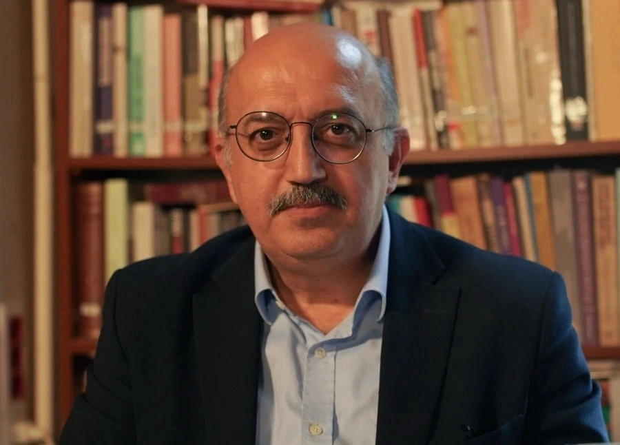
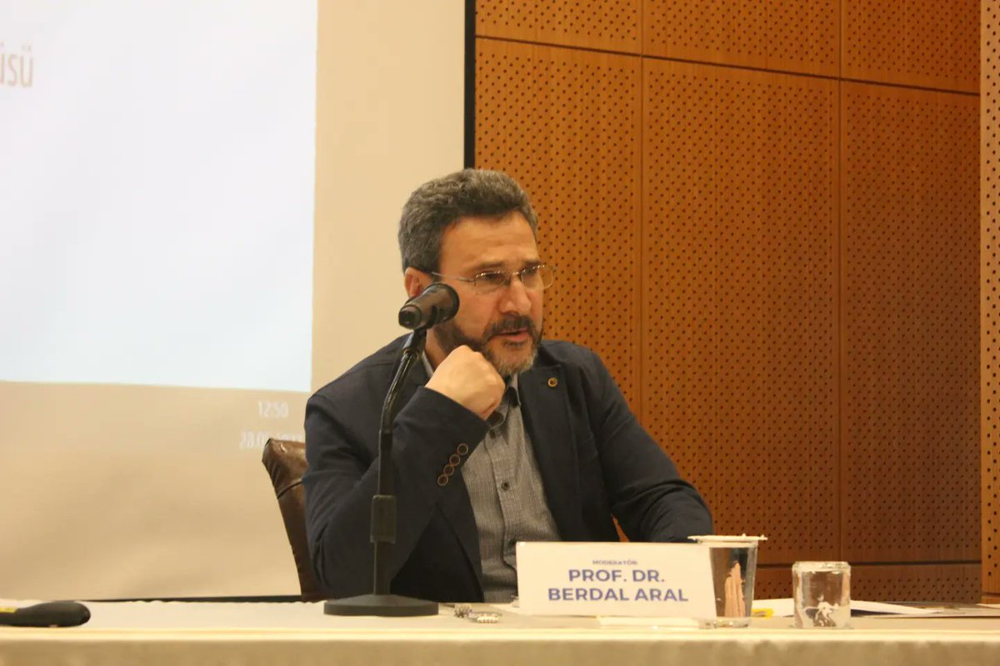

Konuşmacılar
Tarih çalıştayımızın değerli konuşmacıları

Ali Satan
Prof. Dr. Ali Satan, Marmara Üniversitesi İnsan ve Toplum Bilimleri Fakültesi Tarih Bölümü Türkiye Cumhuriyeti Tarihi Anabilim Dalı’nda görev yapan bir akademisyendir; lisans eğitimini 1985-1990 yılları arasında Marmara Üniversitesi Atatürk Eğitim Fakültesi Türkçe ve Sosyal Bilimler Eğitimi Bölümü’nde tamamlamış, yüksek lisansını 1992-1994 yılları arasında Marmara Üniversitesi Türkiyat Araştırmaları Enstitüsü Atatürk İlkeleri ve İnkılap Tarihi alanında yapmış ve 2001 yılında “Halifeliğin Kaldırılması” konulu teziyle doktor unvanını almıştır; akademik kariyerine 1996 yılında araştırma görevlisi olarak başlamış, ardından öğretim görevlisi, yardımcı doçent ve doçent olarak görev yapmış, 2019 yılında profesör unvanını alarak aynı üniversitede görevini sürdürmektedir; ayrıca bölüm başkan yardımcılığı gibi idari görevlerde bulunmuş, Atatürk Araştırma Merkezi Bilim Kurulu üyeliği yapmış ve TRT bünyesinde program yapımcılığı üstlenmiştir; çalışma alanları Türkiye Cumhuriyeti tarihi, Milli Mücadele dönemi, Türk dış politikası ve Osmanlı’dan Cumhuriyet’e geçiş süreci olup çok sayıda akademik yayını ve lisansüstü tez danışmanlığı bulunmaktadır.

Berdal Aral
Ankara Üniversitesi Siyasal Bilgiler Fakültesi Uluslararası İlişkiler bölümünden 1985 yılında mezun oldu. Ardından, yüksek lisansını “Freedom of Movement for Workers between Turkey and the EEC” (Türkiye ile AET arasında İşçilerin Serbest Dolaşımı) başlıklı tez çalışmasıyla 1990 yılında Kent Üniversitesinde (İngiltere) tamamlamıştır. 1994 yılında “Turkey and International Society from a Critical Legal Perspective” (Eleştirel Hukuk Açısından Türkiye ve Uluslararası Toplum) başlıklı çalışmasıyla Glasgow Üniversitesinde (İskoçya) doktorasını tamamlayan Prof. Dr. Berdal Aral’ın, hem verdiği dersler, hem de yaptığı çalışmalar özellikle uluslararası hukuk ve insan hakları alanında yoğunlaşmıştır. Kendisinin Türkçe olarak kaleme aldığı iki kitap çalışması vardır: “Uluslararası Hukukta Meşru Müdafaa Hakkı” (1999) ve “Üçüncü Kuşak İnsan Hakları Olarak Kolektif Haklar” (2010). Ayrıca, Türkçe ve İngilizce olarak hem yukarıda sözü edilen konularda, hem de Türkiye’nin dış politikası alanında yayınlanmış makaleleri vardır. Aral halen İstanbul Medeniyet Üniversitesinde akademik çalışmalarını sürdürmektedir.